• КОН - Кобрановский Отряд Наступления; Войско страны Кобран, ведущее наступление на Абсурдистан во время Первой и Второй Войны.
• Первое упоминание: 15.04.2021 год.
• АЗО - Абсурдистанский Защитный Отряд; Военные Абсурдистана, выступающие в качестве противовеса КОНовцам.
• Первое упоминание: 18.07.2021 год.
• РНОЗ - Революционное Национальное Объединение Зесценбуржцев (Сепаратисты); Это группировка, образованная 16 марта 2022 года и состоящая из радикально настроенных участников, целью которых является возвращение Зесценбургу независимости, то есть отделение его от НРА (Отделение Севера).
• Первое упоминание: 16.03.2022 год
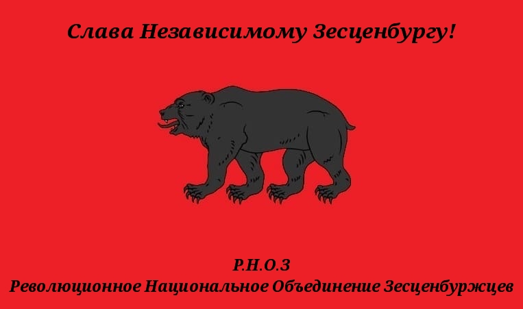
• ВООК — Военизированный Отряд Одрасских Карателей (Или просто «Каратели»); Группа военных-контрактников из Одраса, прибывших в НРА для оказания поддержки в уничтожении революционных формирований (Например, РНОЗовцев)
Первое упоминание: 26 мая 2022 год.
• ПДА — Паранормальная Дивизия Абсурдистана; Военизированное формирование, занимающиеся изучением всего паранормального. Главная их цель — Найти способ воскрешать мёртвых через оккультные практики.
• Первое упоминание: 29 мая 2022 год.
• Служебная Группа Имперской Безопасности (СГИБ) — Гипотетический отряд в Дурке, который, по задумке Управляющего, должен быть сформирован из доверенных лиц на разных должностях (охрана, санитары и т.п.), а также из некоторых аномалий S-класса. Члены СГИБа должны были выполнять функции по защите здания и Управляющего от мятежников и других вражеских формирований, объединившись вместе против единого зла.
Виды разделения лиц на категории:
(1) По роду деятельности (Имперская охрана, имперские санитары и т.п.)
(2) По имеющимся полномочиям (Офицеры, Унтер-офицеры, Рядовые)
На данный момент (13.08.2022) СГИБ находится на стадии разработки.
• «СГИБ-2» — По аналогии с «СГИБ», это отряд полиции специального назначения и солдат, сформированный для обеспечения полной безопасности мэра города. В отличие от «СГИБ», «СГИБ-2» реализован.
Первый отряд был сформирован 7 апреля 2023 года.
• ОПСН (Отряд Полиции Специального Назначения) или просто ПСН (Полиция Специального Назначения) — Аналог тайной полиции. Обладает бо́льшими полномочиями, чем обычные отряды полиции. Также, в обязанности ПСН входит: Поддержка дисциплины (т.е. тотальный контроль и уничтожение неугодных правительству субъектов), избавление от мятежников и сепаратистов, проведение «экстренных судов» (т.е. человека казнят на месте без суда и следствия).
Интересный факт: В народе и среди бунтующих, ПСН называют «ПСиНами».
• ВРАНП (Всеобщая Революционная Абсурдистанская Народная Партия) — Оппозиционная и нелегальная партия революционного толка, возникшая в НРА 26.11.2022-го года. Основателями партии являются: Руди Фостер, Стэнли Хаерс и Вилли Кипп (см. ЛОР, «Выдающиеся личности»).
Партия объединяет интересы большинства мятежников, которые хотят тем или иным образом изменить политическую обстановку в стране. Однако, можно выделить 3 основных начала партии:
- Борьба за независимость Зесценбурга (Не завершенная кампания РНОЗ);
- Борьба за права кареглазых (Деятельность кареглазых повстанцев);
- Борьба за демократию в стране.
Символом партии является флаг с серовато-бежевым фоном, на котором изображено 3 журавля (соответственно, символизирующие три начала партии, описанные выше). А мёртвая змея на флаге символизирует гнилое тоталитарное правительство НРА.
Примечание: Членов партии называют «ВРАНПовцами», «Журавлями» или просто «Партийцами».
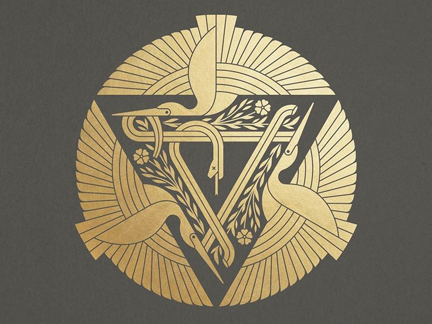
• Спустя некоторое время существования Партии, многие приверженцы ВРАНП стали организовывать новое движение, которое было отделено от Партии. Этим движением стал — Социализм (впоследствии ставший АРС — Анархическим Радикальным Социализмом).
Причинами такого отделения от Партии стало то, что ВРАНП начали проигрывать многие сражения и в целом ослабли как движение, поэтому нужен был новый глоток воздуха и надежды, с измененными приоритетами.
Однако, была и та часть людей, которые не поддерживали слишком радикальные взгляды и противостояние с Правительством НРА, поэтому на локальном уровне, в некоторых городах стал организовываться Умеренный Социализм.
• АРС — это радикальное движение, которое получило повсеместное распространение в НРА. Члены АРСа враждуют с солдатами Оси и одновременно с этим хотят свергнуть нынешнее Правительство НРА. Численность АРСа достаточно огромная.
Они также называют себя «Истинными Социалистами», поскольку именно с их движения началась новая ветка развития социализма в стране.
АРС враждуют с Умеренными Социалистами.
• Умеренный СоцАбсурд — движение умеренных социалистов, которые по прежнему враждуют с войсками Оси, однако сотрудничают с Правительством НРА и не вступают с ним в противостояние, пытаясь решать конфликты мирным путём, через переговоры и компромиссы. Умеренный социализм не получил большое распространение, поэтому имеет локальный характер. Основная точка возникновения и популяризации этой ветки социализма приходится на город Фрэртон.
Умеренные Социалисты враждуют с АРС.
• Движение социалистического Абсурдистана («СоцАбсурд»). Впоследствии ставшее АРС («Анархическим Радикальным Социализмом») — движение, возникшее в некоторых городах НРА (в частности во Фрэртоне) из-за отделения части Партийцев от ВРАНП. Начало возникновения приходится на май 2023 года.
СоцАбсурды в основном направляют свои силы на достижение демократического строя в НРА и свержение Мудрого Президента.
Также, в отличие от Партии — СоцАбсурды негативно относятся к интервентам и считают, что они могут начать претендовать на власть в Абсурдистане, в случае удачного переворота.
• Наименование участников движения: «Соцабсурды», «АРСЫ».
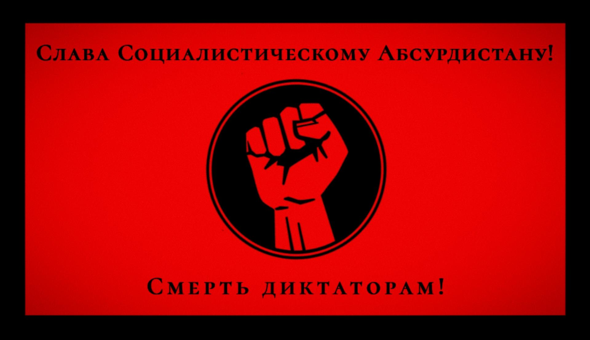
• Движение умеренного социализма («Умеренный СоцАбсурд») — движение, имеющее локальный характер, возникшее во Фрэртоне. Полное самоопределение движения и создание собственного знамени приходится на начало августа 2023 года.
В отличие от радикальных социалистов, умеренные — не пытаются предпринять попытки свержения Правительства НРА, а напротив — сотрудничают с ним. Однако, в то же время, как и АРСы — сохраняют вражду к интервентам (войскам Оси).
• Наименование участников движения: «Социалисты», «Умеренные», «У-СОЦы».
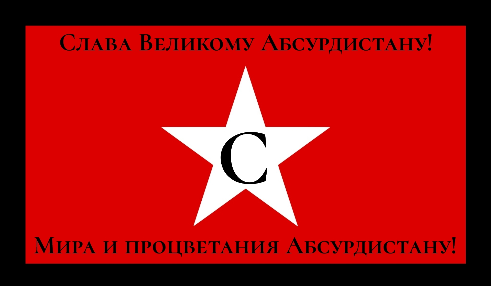
• Зондеркоманда — специальное формирование, состоящее из пленных/сдавшихся партийцев и интервентов, которые добровольно согласились воевать на стороне правительства НРА.
• ЧГК (Чрезвычайная Городская Комиссия) — сформированная в некоторых областях НРА специальная комиссия для слежки за корректностью выполнения долга и работы высокопоставленных лиц госаппарата (например, мэров) и выявления предателей.
• «Люди в чёрном» — небольшая группировка киллеров, целью которых является приведение в исполнение завещания убитого коменданта концлагеря для кареглазых Венцимос, в котором говорится об уничтожении некоторых зачинщиков рейда на лагерь (в их числе и Управляющий Дурки).
• Отдел Гвардейской Разведки (О.Г.Р) — созданная во Фрэртоне небольшая организация, которая занимается разведкой и шпионажем за политическими преступниками и врагами Родины.
• «Святые» — группировка людей, преимущественно состоящая из девушек и женщин, сформированная в НРА, городе Фрэртон. По данным городской разведки, эта группировка создана неким экстремистских политиком, выдающим себя за священника. Целью Святых является поиск и уничтожение верхушки города (чиновников, мэра и др.), которых Святые обвиняют во всех бедах в стране, и обвиняют в геноциде мирного населения. А с помощью уничтожения городского управляющего аппарата — они хотят добиться справедливости и переворота в городе, а потом и во всей стране.
Святые, как правило, работают сами по себе, не прибегая к помощи других организаций, формирований и группировок.
• Самые известные подразделения армии Кобрана на территории Фрэртона:
ОПК (Оккультное Подразделение Кобрана) (Символика 1) — аналог ПДА. ОПК занимаются изучением оккультных практик, которые можно использовать в войне. А также изучают всевозможные аномалии.
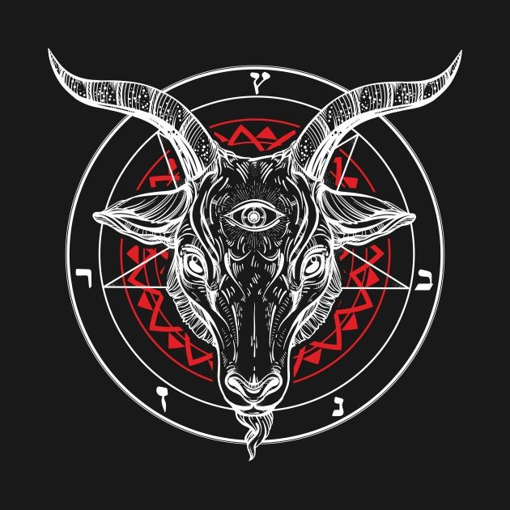
РПК (Разведывательное Подразделение Кобрана) (Символика 2) — аналог ОГР. Является «тайной полицией» и инструментом разведки.
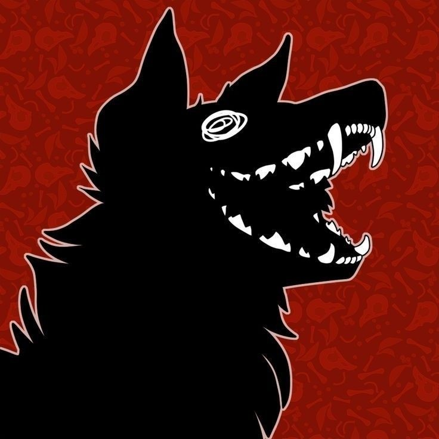
ДПК (Добровольческое Подразделение Кобрана) (Символика 3) — подразделение армии Кобрана, состоящее из пленных, коллаборационистов, предателей Абсурдистана и др. Ближайший аналог — Зондеркоманда Фрэртона.
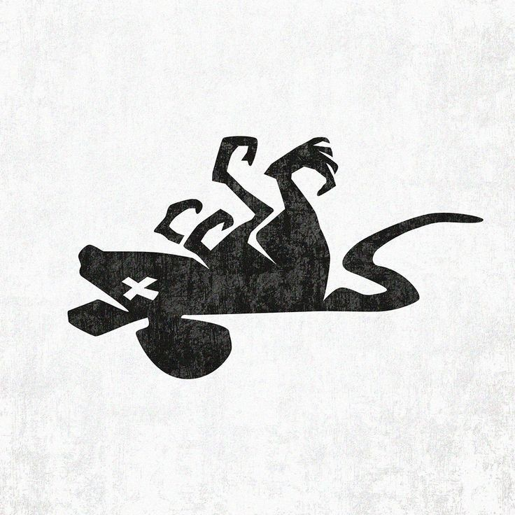
• АПДК — Абсурдистанский Партизанский Добровольческий Корпус. Свободное добровольное формирование отдельных групп партизан для противостояния странам Оси на территории оккупированных городов НРА.
Особенностями АПДК является отсутствие централизованного командования.
Партизаны АПДК не подчиняются государственным военным формированиям, однако активно с ними сотрудничают.
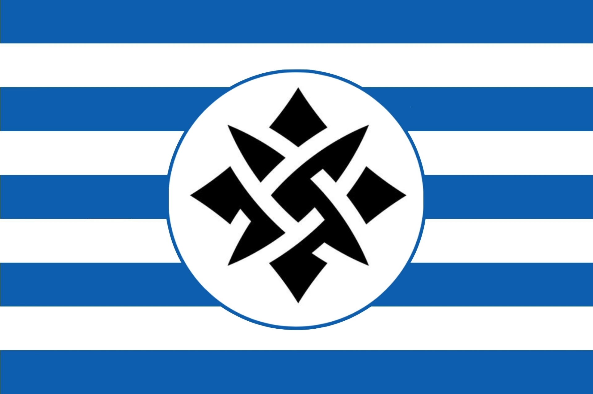
• Бандитский Корпус (БК, БыКи, Звери) — группировка, состоящая преимущественно из бандитов разных мастей. Бандитский Корпус преследует цель свергнуть правительство НРА, дабы на место верхушек гос. аппараты встали главы мафий, которые подчинят себе все сферы общественной жизни. Быки могут сотрудничать с военными других стран и разными группировками для достижения своих целей.
• Анархисты — небольшая группировка, состоящая из бандитов, отрёкшихся от идей партийцев и социалистов, а также из разных других бойцов, которые приняли идею анархизма. Анархисты ставят перед собой цель уничтожить любые проявления диктатуры и государства в целом, обеспечить свободу населению. Данная группировка часто проповедует либералистические идеи, призывая к толерантности и свободе воли.
Анархисты не сотрудничают с военными в принципе, а также не сотрудничают с другими государственными группировками, или группировками, которые направлены на поддержку правительства.
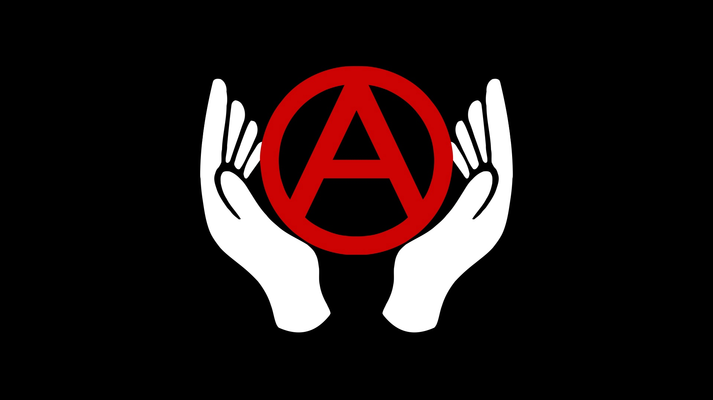
• Хаос — группировка, состоящая преимущественно из фанатиков, выходцев из Кобрана, служивших в ОПК (Оккультном Подразделении Кобрана), которые предали командование взамен на грёзы и мечтания о заветном Монолите в Дремлющем храме, который дарует силу. Агрессивные фанатики из Хаоса готовы убивать всех на своём пути, лишь бы разгадать загадку Монолита и тем самым установить тотальный контроль над всеми территориями, включая Кобран и НРА.
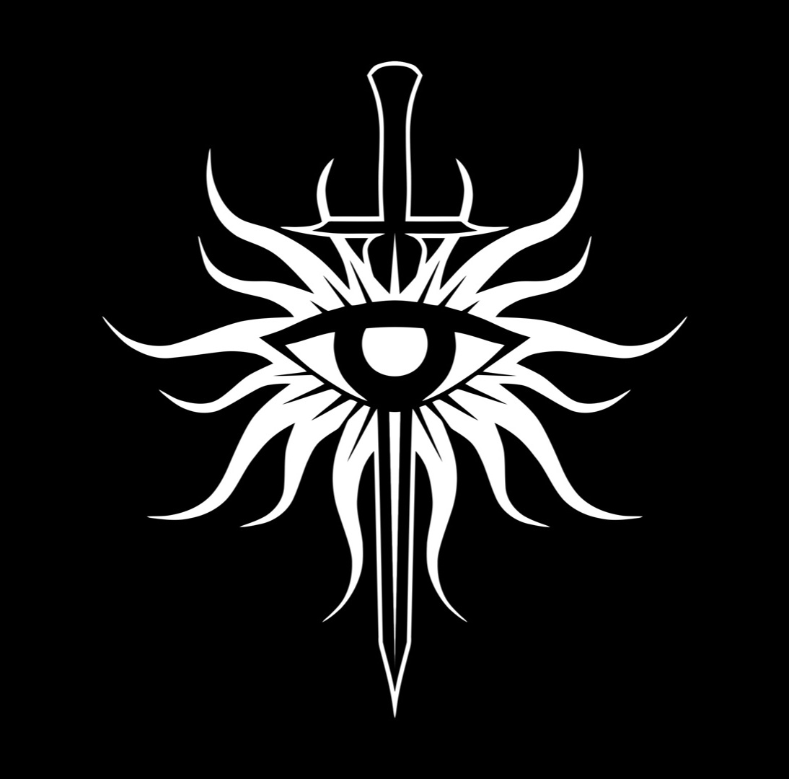
• НАД (Националистическое Абсурдистанское Движение) — одна из немногих группировок, которую поддерживает правительство НРА.
НАДовцы выступают за чистоту Абсурдистанской расы, угнетают кареглазых и всячески поддерживают политику Мудрого Президента.
НАДовцы распространены по всей территории НРА.
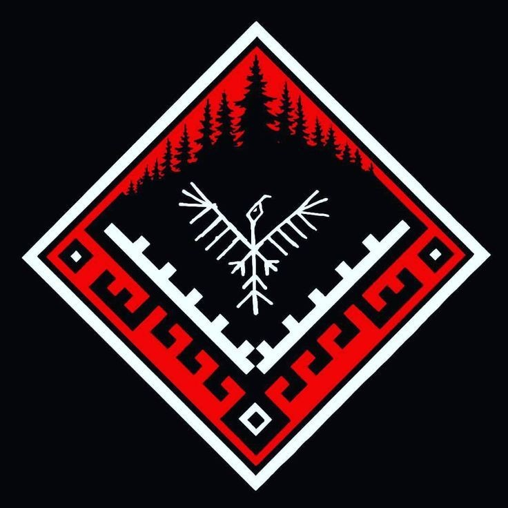
• ММО — Матринесовская Миротворческая Организация. Группировка, состоящая из боевиков Матринеса, направленная в НРА для урегулирования конфликта между правительством Абсурдистана, интервентами и мятежниками. ММО выступает как нейтральная сторона, помогающая всем сторонам заключить мир.
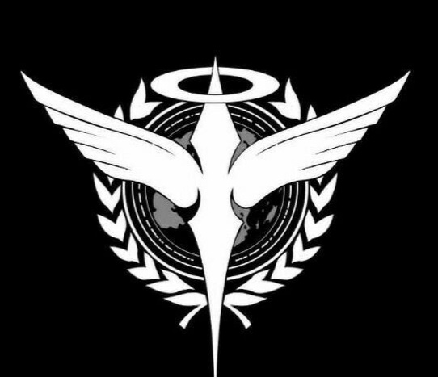
• НБСФ (Народный Блок Сепаратистов Фрэртона) — группировка, возникшая на территории города Фрэртон (НРА). Сепаратисты ставят перед собой цель — отделить город от Абсурдистана, основав “отдельное государство в государстве”.
Катализатором для возникновения сепаратистов стали указы Мэра Фрэртона Максимуса Моррисона, которые запрещали использование психотронного оружия в борьбе с интервентами (Хотя, издавать такой указ было нельзя, поскольку он противоречит словам Мудрого Президента), дабы не превратить город в аномальные развалины.
Такой шаг был хорошо воспринят группой сепаратистов, в сердцах которых стала появляться надежда на лучшее будущее для Фрэртона, поэтому они стали распространять свои идеи в массы, продолжая поддерживать Мэра.
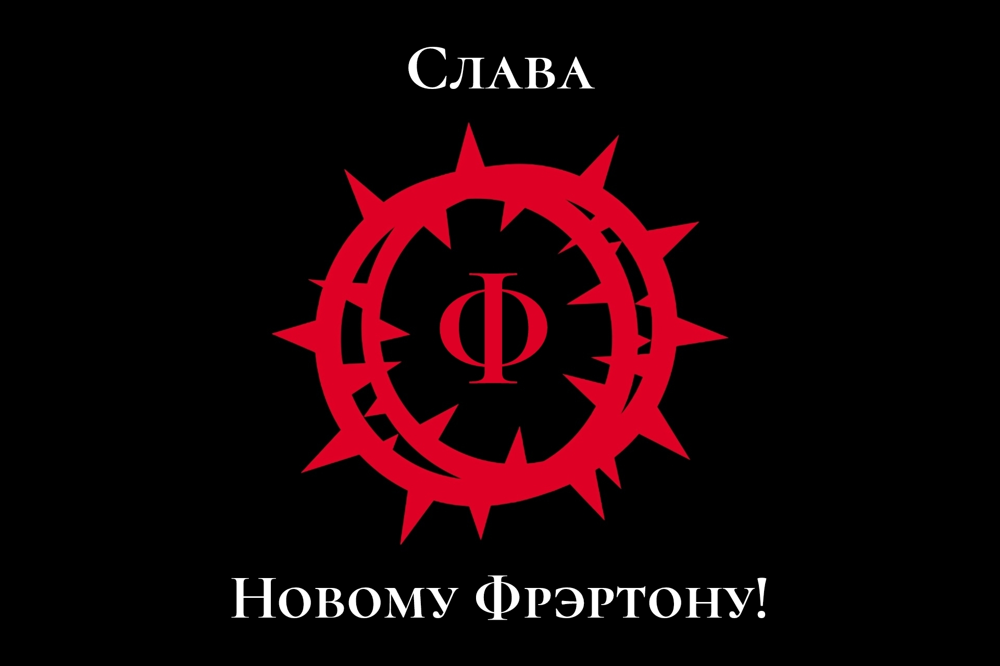
• СПД (Свидетели Последнего Дня) — группировка, возникшая на территории НРА. Концепция движения Свидетелей состоит в полном отчаянии и отсутствии перспективного будущего для себя и своих детей. СПД считают, что человечество полностью обречено на гибель, что нет смысла создавать потомство и обрекать его на вечные страдания, что нет счастливого будущего из-за людей. Целью СПД является уничтожение человечества, дабы прервать порочный круг мучений и страданий людей.
Подробнее концепцию Свидетелей описывает пост, прикрепленный ниже.
СПД часто конфликтуют с БТА из-за различий в идеях.
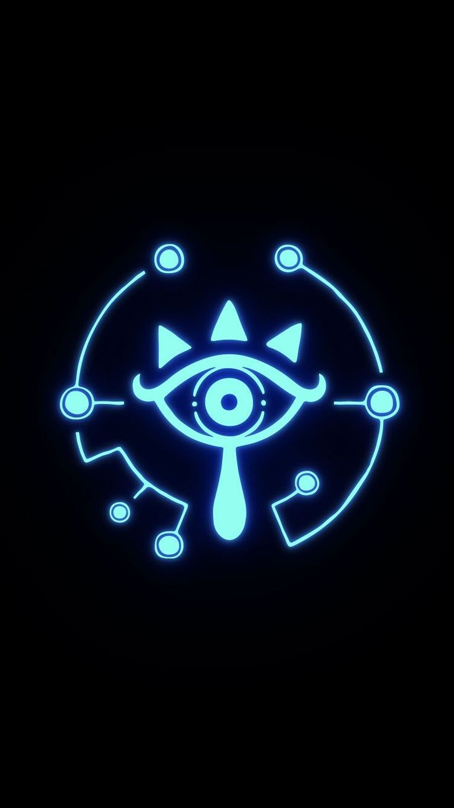
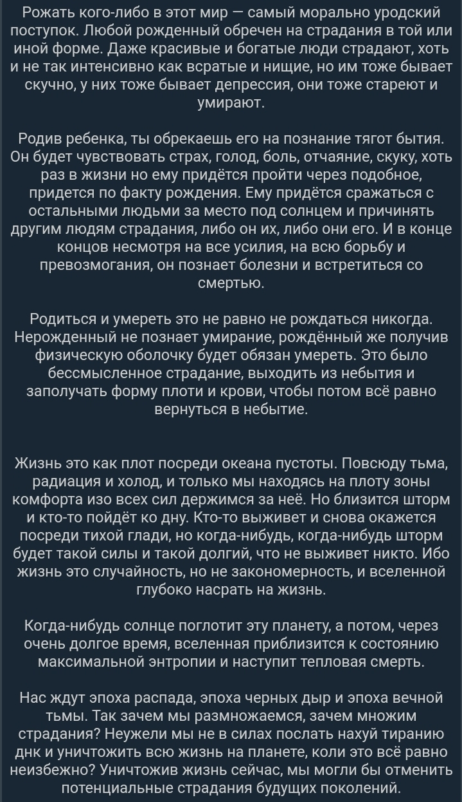
• БТА (Блок Трансгуманистов Абсурдистана) — группировка людей, придерживающихся идей трансгуманизма, основанная выходцами из Матринеса, на территории НРА.
Краткая справка: Трансгумани́зм — общественный строй, политическая позиция и философская концепция, продвигающие использование достижений науки и технологии для улучшения умственных и физических возможностей человека с целью устранения тех аспектов человеческого существования, которые трансгуманисты считают нежелательными — страданий, болезней, старения и смерти.
Цель БТА: Внедрение различных технологий для создания бессмертного человечества, включая правителей стран. БТА часто конфликтуют с СПД из-за различий в идеях.
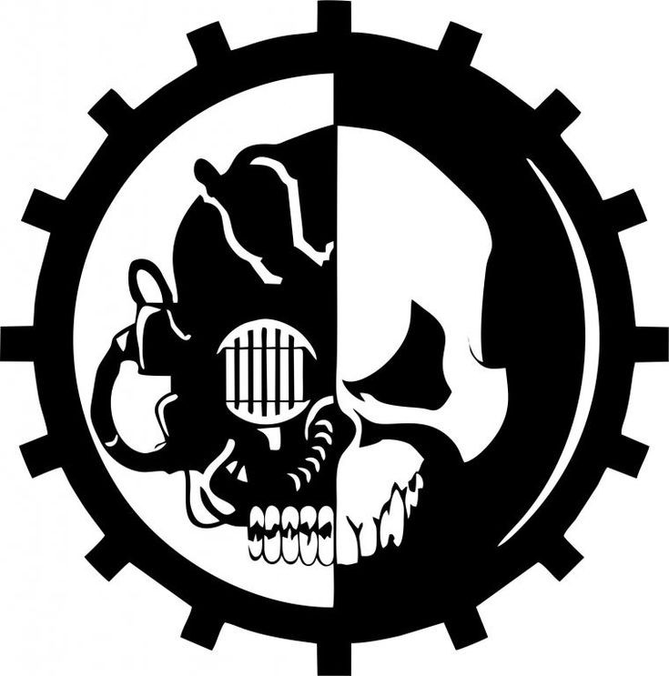
• НГА (Национальная Гвардия Абсурдистана) — специальное формирование военнослужащих Абсурдистана, целью которых является борьба с интервенцией и с другими врагами Абсурдистана, а также уничтожение предателей Родины.
НГА схожее формирование с ПСН, однако в отличие от них, Гвардейцы более подготовлены и выполняют цели государственной важности, помимо участия в сражениях.
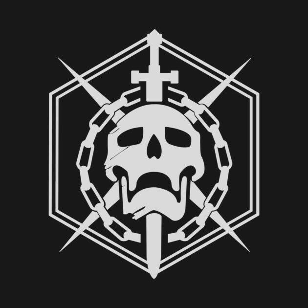
• Хранители Протокола — одна из первых группировок, зародившихся во время войны в Абсурдистане, которая на прямую не принимает участие в боевых действиях. Хранители используют интернет для передачи своих идей и поиска единомышленников.
Идея Хранителей заключается в следующем: По их мнению, всем этим бескрайним и глубоким интернетом владеет единый Бог Интернета, которого Хранители прозвали как Netgod Aspectus.
Аспектус выбрал самых лучших людей в Интернете, дабы открыть им Протокол.
Протокол содержит свод правил и предписаний, якобы лично написанных Аспектусом. Хотя по факту оригинальный свод предписаний содержит пункты 3, 4, 6 и 7. Все остальные пункты были позже дополнены Хранителями:
Протокол:
- Netgod Aspectus — верховный Бог Интернета, принёсший Протокол.
- Интернет — никому не принадлежит, кроме верховного Бога Интернета.
- Интернет — свободное цифровое пространство.
- Никто не может препятствовать свободному получению информации из Интернета.
- Человек — инструмент Протокола, а значит и Верховного Бога.
- Существует истинное знание сети, но где оно хранится — неизвестно.
- Чтобы открыть истинное знание сети — нужно отыскать 12 ключей Интернета.
Хранители верят, что Интернет хранит много тайн и загадок. Верят, что это самое могущественное пространство, которым владеет самый Великий Бог. А кроме того, Хранители считают, что где-то в глубинах Интернета хранится истинное знание, которое можно открыть лишь отыскав 12 ключей Интернета (как и написано в протоколе).
Хранителей можно охарактеризовать как ярых фанатиков. А их движение близко к религиозным сектам. Однако, эти люди не просто глупые марионетки, подчиняющиеся кому-то. Хранители очень умны, сообразительны и блестяще владеют навыками сбора и обработки информации. Хранители берут в свои ряды всех заинтересовавшихся, но тайны Интернета смогут познать только самые верные и мудрые.
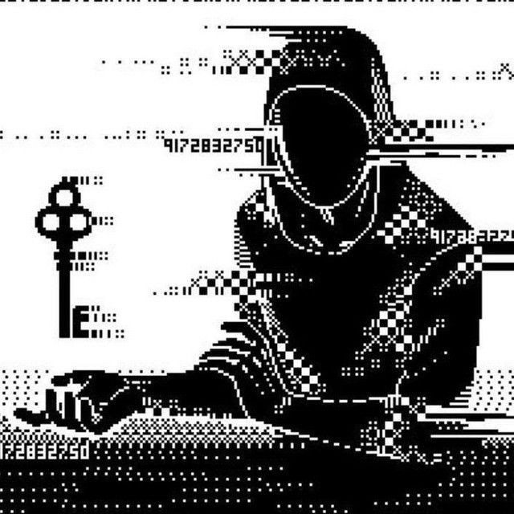
Движение КБС (Кобрановские Бойцы Сопротивления) — молодая группировка, возникшая на территории Кобрана. Члены КБС противостоят тоталитарному режиму в своей стране.
КБСовцы симпатизируют некоторым группировкам в Абсурдистане, но из-за тамошнего такого же тоталитарного Правительства — КБСовцы не горят желанием оказывать помощь.
КБС в равной мере ненавидят Президента Кобрана и Президента Абсурдистана.
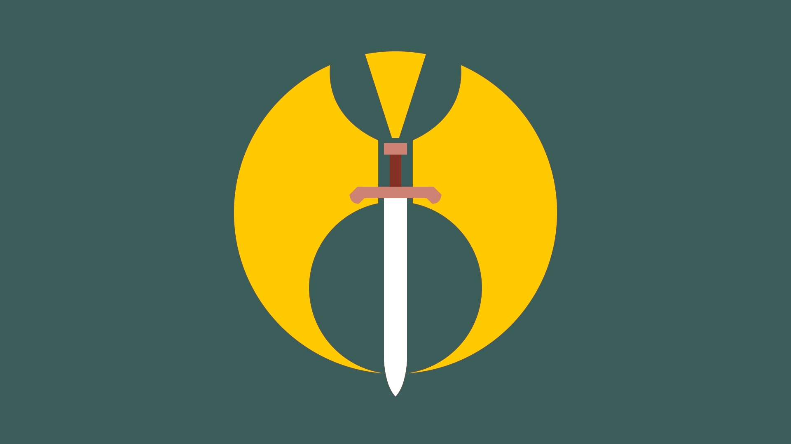
КОА (Корпус Освободителей Абсурдистана) — новое военное формирование, утвержденное Кобрановским командованием.
КОА состоит из пленных Абсурдистанцев, коллаборационистов, беженцев и добровольцев, которые не могут служить в регулярной армии по разным причинам.
Цели КОА:
— Помощь в уничтожении врагов на территории Кобрана;
— Участие в боевых действиях на оккупированных Кобраном территориях;
— Патрулирование оккупированных территорий.
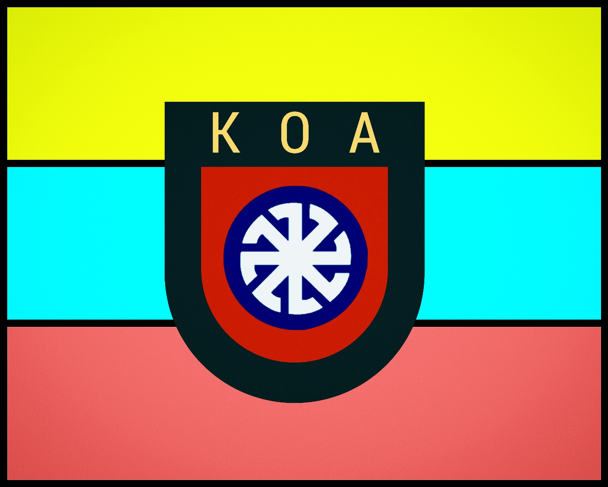
• Культ Скорбящих или Скорбящие — новая группировка, получившая широкое распространение летом 2024 года, во время долгой и изнуряющей войны, которая не прекращается.
Культ Скорбящих — пассивная группировка, состоящая из монахов, раненых, больных и отвергнутых самим Господом. Они призывают к проявлению сострадания ближним, а также верят, что Высшие силы перестали помогать им, поэтому остается уповать на милость среди людей и на свои собственные силы.
Культ никогда не нападает и не располагает вооружением.
Эти люди всегда рады всем пришедшим к ним.
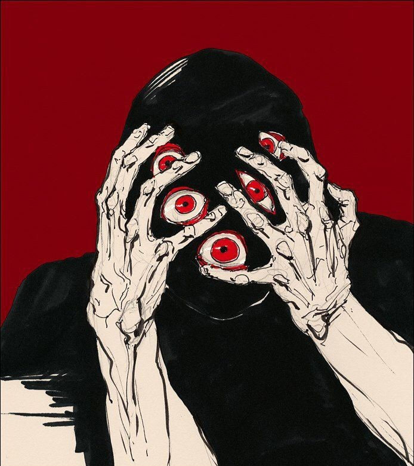
• «Церковь Покаяния» — радикальная секта, набравшая популярность на территории Абсурдистана и Кобрана.
Приверженцы Церкви считают, что все проблемы, катастрофы и беды в мире происходят из-за греховной и порочной сущности людей, которые не способны раскаяться во грехах пред Великой Волей.
Великая Воля, по мнению сектантов, — это некая сущность, некое божество, которое способно наделить человека как великим благом, так и дать ему вековое проклятие.
Члены секты считают, что избавиться от греховности можно лишь через выполнение приказов Великой Воли. Когда греховность будет снята с души — наступит время благодати.
Чтобы связаться с «Великой Волей», сектанты готовят и пьют разные отвары из трав и грибов, которые вызывают галлюцинации. Кроме того, практикуется ритуал разжигания небольшого количества дурманящих трав в замкнутом помещении, что также вызывает галлюцинации.
Церковь Покаяния относится ко всем терпимо до тех пор, пока высшим «Просвещённым» Великая Воля не даст команду на убийство того или иного грешника.
Ещё один дикий ритуал, который практикуется: омывание лица кровью убитых, по приказу Великой Воли.
Иерархия секты представляет собой разделение людей по «цвету крови»:
- Бурая или чёрная кровь, по мнению сектантов, течёт во всех тех, кто ещё не обуздал силу Великой Воли. Таких называют грешными. Грешных убивают, чтобы омыться их кровью, либо заставляют примкнуть к исполнению приказов Великой Воли.
- Красная или алая кровь течёт в тех, кто встал на путь исправления и готов служить во имя Великой Воли. Таких называют покаявшимися.
- Голубая кровь течёт в тех, кто полностью отдался Воле и получил способность изредка связываться с ней. Таких называют аристократами.
- Золотая кровь течёт в тех, кто может полноценно связываться с Великой Волей и передавать её слова всем остальным. Таких называют просвещёнными.
- Белая кровь течёт в тех, кого Великая Воля уже наделила своей благодатью за какие-либо поступки. Высшее звание в иерархии. Таких называют инквизиторами само́й Великой Воли.
• Кобрановская Файергруппа — специальное Кобрановское подразделение, сформированное для ликвидации последствий распространения хвори на территории оккупированного Фрэртона. В задачи Файергруппы входит: сжигание заражённых трупов, ликвидация живых заражённых и в целом предотвращение дальнейшего распространения заразы.
В качестве вооружения: пистолеты, автоматы и, конечно, огнемёты.
Для защиты органов дыхания применяются респираторы и противогазы. Открытые участки тела защищены по максимуму, чтобы минимизировать контакт с инфекцией.
Файергруппа входит в Кобрановскую военную хунту Фрэртона.
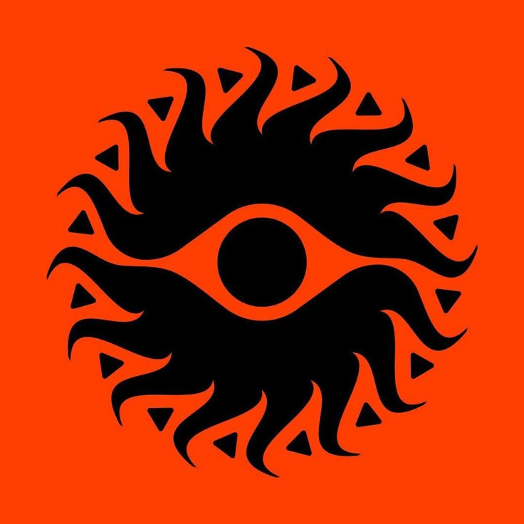